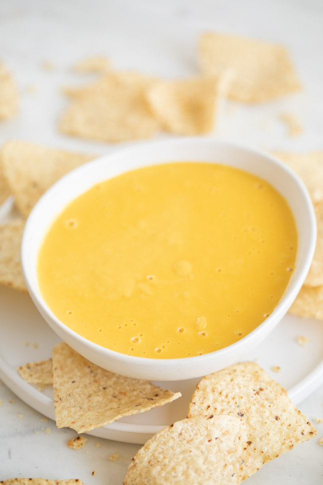

Receta Queso Vegano

Descripcion:
¡Una salsa de queso a base de anacardos que tiene mucho sabor y
engañaría incluso a los aficionados al queso más exigentes!
Esta receta se prepara mejor en una licuadora de alta potencia.
¡No puedo decir cómo sería en algo diferente! Disfrute con totopos o salsa casera.
Ingredientes:
- 1 taza de anacardos crudos
- 2 y media tazas de agua caliente
- 2 cucharadas de levadura nutricional
- 2 cucharadas de salsa fresca
- 2 dientes de ajo,picados
- 1 cucharadita de mostaza de Dijon
- 3/4 cucharadita de comino molido
- 3/4 cucharadita de sal kosher
Pasos a seguir:
-
Coloque los anacardos en un recipiente y cubra con la mitad del agua caliente.
Remoja durante 5 minutos. Escurralos.
-
Combine los anacardos escurridos, la 1 1/4 taza restante de agua caliente,
la levadura nutricional, la salsa, el ajo, el chile ancho en polvo, la mostaza Dijon,
el comino y la sal en una licuadora de alta potencia.
Comience a licuar a la velocidad más baja y aumente lentamente la velocidad.
Licuar durante 2 minutos.
Agregue más agua caliente si desea.